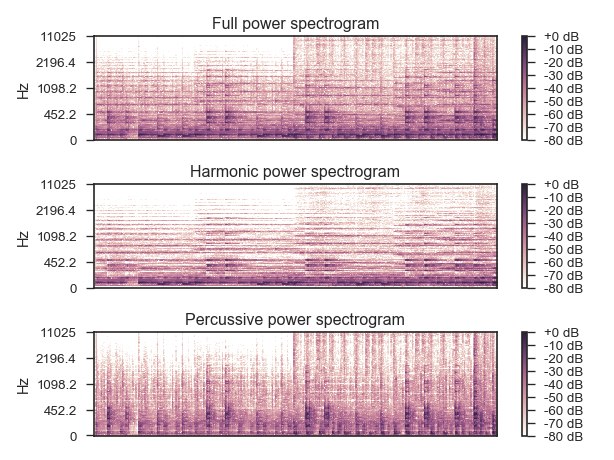

librosa.decompose.hpss¶
-
librosa.decompose.hpss(S, kernel_size=31, power=2.0, mask=False, margin=1.0)[source]¶ Median-filtering harmonic percussive source separation (HPSS).
If margin = 1.0, decomposes an input spectrogram S = H + P where H contains the harmonic components, and P contains the percussive components.
If margin > 1.0, decomposes an input spectrogram S = H + P + R where R contains residual components not included in H or P.
This implementation is based upon the algorithm described by [1] and [2].
[1] Fitzgerald, Derry. “Harmonic/percussive separation using median filtering.” 13th International Conference on Digital Audio Effects (DAFX10), Graz, Austria, 2010. [2] (1, 2) Driedger, Müller, Disch. “Extending harmonic-percussive separation of audio.” 15th International Society for Music Information Retrieval Conference (ISMIR 2014), Taipei, Taiwan, 2014. Parameters: - S : np.ndarray [shape=(d, n)]
input spectrogram. May be real (magnitude) or complex.
- kernel_size : int or tuple (kernel_harmonic, kernel_percussive)
kernel size(s) for the median filters.
- If scalar, the same size is used for both harmonic and percussive.
- If tuple, the first value specifies the width of the harmonic filter, and the second value specifies the width of the percussive filter.
- power : float > 0 [scalar]
Exponent for the Wiener filter when constructing mask matrices.
Mask matrices are defined by mask_H = (r_H ** power) / (r_H ** power + r_P ** power) where r_H and r_P are the median-filter responses for harmonic and percussive components.
- mask : bool
Return the (binary) masking matrices instead of components
- margin : float or tuple (margin_harmonic, margin_percussive)
margin size(s) for the masks (as described in [2])
- If scalar, the same size is used for both harmonic and percussive.
- If tuple, the first value specifies the margin of the harmonic mask, and the second value specifies the margin of the percussive mask.
Returns: - harmonic : np.ndarray [shape=(d, n)]
harmonic component (or mask)
- percussive : np.ndarray [shape=(d, n)]
percussive component (or mask)
See also
util.softmaskExamples
Separate into harmonic and percussive
>>> y, sr = librosa.load(librosa.util.example_audio_file(), duration=15) >>> D = librosa.stft(y) >>> H, P = librosa.decompose.hpss(D)
>>> import matplotlib.pyplot as plt >>> plt.figure() >>> plt.subplot(3, 1, 1) >>> librosa.display.specshow(librosa.logamplitude(np.abs(D)**2, ... ref_power=np.max), ... y_axis='log') >>> plt.colorbar(format='%+2.0f dB') >>> plt.title('Full power spectrogram') >>> plt.subplot(3, 1, 2) >>> librosa.display.specshow(librosa.logamplitude(np.abs(H)**2, ... ref_power=np.max), ... y_axis='log') >>> plt.colorbar(format='%+2.0f dB') >>> plt.title('Harmonic power spectrogram') >>> plt.subplot(3, 1, 3) >>> librosa.display.specshow(librosa.logamplitude(np.abs(P)**2, ... ref_power=np.max), ... y_axis='log') >>> plt.colorbar(format='%+2.0f dB') >>> plt.title('Percussive power spectrogram') >>> plt.tight_layout()
Or with a narrower horizontal filter
>>> H, P = librosa.decompose.hpss(D, kernel_size=(13, 31))
Just get harmonic/percussive masks, not the spectra
>>> mask_H, mask_P = librosa.decompose.hpss(D, mask=True) >>> mask_H array([[ 1., 0., ..., 0., 0.], [ 1., 0., ..., 0., 0.], ..., [ 0., 0., ..., 0., 0.], [ 0., 0., ..., 0., 0.]]) >>> mask_P array([[ 0., 1., ..., 1., 1.], [ 0., 1., ..., 1., 1.], ..., [ 1., 1., ..., 1., 1.], [ 1., 1., ..., 1., 1.]])
Separate into harmonic/percussive/residual components by using a margin > 1.0
>>> H, P = librosa.decompose.hpss(D, margin=3.0) >>> R = D - (H+P) >>> y_harm = librosa.core.istft(H) >>> y_perc = librosa.core.istft(P) >>> y_resi = librosa.core.istft(R)
Get a more isolated percussive component by widening its margin
>>> H, P = librosa.decompose.hpss(D, margin=(1.0,5.0))
